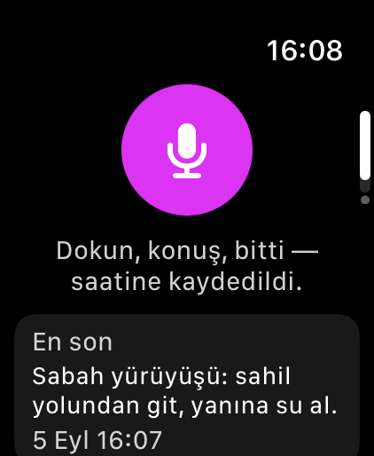

Yakala
VoxWhisper’ı aç, mikrofona dokun. watchOS diktesini veya metin girişini kullan; ardından Bitti’ye dokun.
Saatine söyle, metin olarak kaydet. Sonra oku. İhtiyaç duyduğunda gönder.
App Store’dan VoxWhisper’ı edin
Apple Watch · watchOS 10 ve üzeri · İsteğe bağlı Pro ile ücretsiz
Apple
Watch uygulamasıdır; iPhone not düzenleyicisi değildir.

VoxWhisper’ı aç, mikrofona dokun. watchOS diktesini veya metin girişini kullan; ardından Bitti’ye dokun.
Metin notun saatine kaydedilir. Tam metne ihtiyaç duyduğunda Notlar’ı aç.
Notu açıp Gönder’e dokun. Saatin sistem paylaşım menüsündeki uygun uygulamalardan birini seç.
Güncel fiyat ve koşullar abone olmadan önce Apple Watch’ta gösterilir. Pro ses kayıtları otomatik olarak metne çevrilmez.
VoxWhisper Apple Watch’ta çalışır. Saatindeki App Store’da VoxWhisper’ı ara veya App Store bağlantısından saatine yükle. Ayrı bir iPhone düzenleyicisi yoktur.
Metin notları Apple’ın watchOS diktesiyle oluşturulur. Pro ses kayıtları ayrı bir kayıt ve dinleme özelliğidir; saatte kalır ve otomatik olarak metne çevrilmez.
Metinler yerel olarak kaydedilir. Uygun metinler, kendi Apple Hesabının iCloud anahtar-değer deposu üzerinden ve onun sınırları içinde eşzamanlanır. Ses kayıtları saatte kalır. Geliştirici not veya ses kaydı içeriğini almaz.
Evet. Metin notunu açıp Gönder’e dokun. Kullanılabilen hedefler, saatindeki uygulama ve hesaplara bağlıdır.
Aboneliğini Apple Hesabındaki abonelikler bölümünden yönet. Uygulamayı silmek aboneliği iptal etmez. Yerel notlarına ve ses kayıtlarına ihtiyacın varsa uygulamayı yüklü tut.
Watch modelini, watchOS sürümünü ve çalışmayan adımı bize yaz. Lütfen özel not içeriğini gönderme.
Kurulum ve sorun giderme